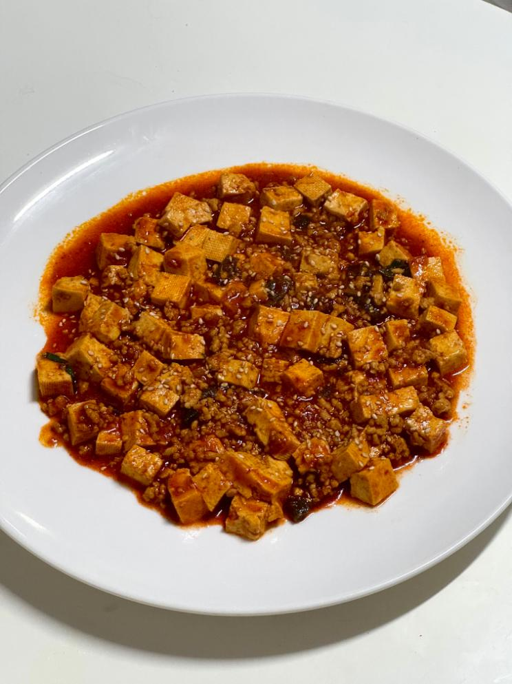

- 마파두부 -
밥 비벼 먹기 딱 좋은 매콤 고소함

📝 재료
- 두부 - 200g
- 간 돼지고기 - 100g
- 대파 - 한 주먹
- 참기름 - 한 큰술
- 식용유 - 두 큰술
- 물 - 반 컵
- 양념장 - 반 컵
- 된장 - 한 큰술
- 전분물 - 1/5컵
🍳 만드는 법
- 식용유와 참기름을 두르고 파를 볶아 파향을 내줍니다.
- 파향이 올라오면 돼지고기를 넣고 타지 않게 익혀줍니다.
- 물과 양념장, 된장을 넣고 잘 저어줍니다.
- 국물이 끓기 시작하면 두부를 넣고 끓여줍니다.
- 전분물을 넣어 농도를 맞춘 뒤, 마지막에 참기름 한 큰술을 넣어 마무리합니다.
💡 TIP
양념장은 닭볶음탕이나 매운 갈비양념처럼 빨간 양념이라면 어떤 것이든 잘 어울려요.